Activity: Create a base extruded synchronous feature
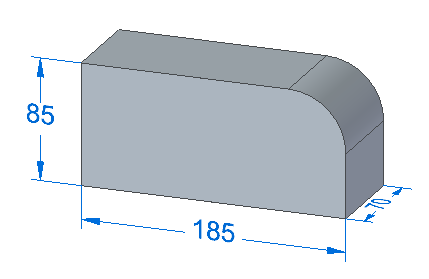
Overview
This activity demonstrates the process of creating a base feature, the initial solid in a model.
Objectives
Create a vise base to become familiar with techniques used in the construction of a base feature.
In this activity you will:
Create regions consisting of sketch elements.
Use the Select tool to define an initial solid shape.
If you are using Internet Explorer and a video is not displaying in your training guide, click the Tools tab (or gear icon)→Compatibility View settings, and then clear the selection of Display intranet sites in Compatibility View.
You must be in the Synchronous environment to complete this activity.
The white Solid Edge background used in these instructions may differ from your display.
Start Solid Edge.
On the File menu, click New→ISO Metric Part.
On the Home tab→Draw group→Rectangle by Center list, choose the Rectangle by 2 Points command.
Hover over the XZ plane and then click the lock.
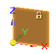
Draw the sketch and place the dimensions shown.
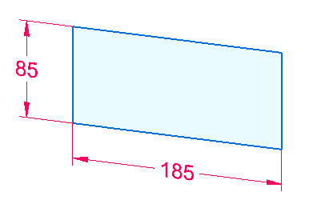
Place a fillet on corner (1). On the Home tab→Draw group, choose the Fillet command.
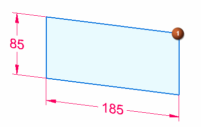
Pause the cursor over corner (1) and click when both lines highlight.
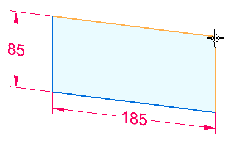
On the Fillet command bar, type 40 in the Radius box.
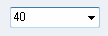
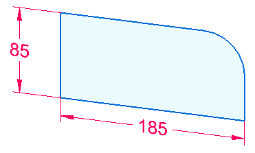
Select the region contained within the fillet and four lines.
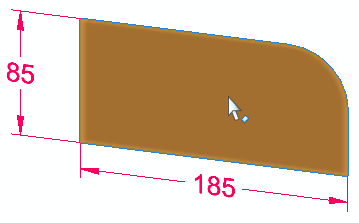
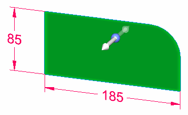
Select the extrude handle.
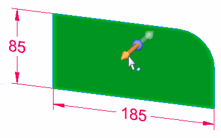
Define the extrusion extent by typing 70 mm into the dynamic edit box and press the Tab key. Position the cursor to extend to the side as shown.
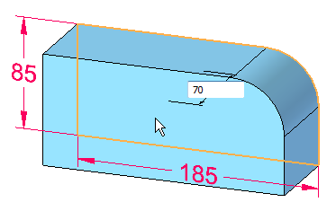
Notice that the sketch dimensions migrate to the base feature.
Save this file. You will continue to work in it as you progress through this activity.
In this activity, you learned how to create a base feature. A sketch was created and dimensioned. A region was extruded and the sketch dimensions migrated to the base feature. The base feature is ready for material to be added or removed to create the desired part.
Click the Close button in the upper–right corner of this activity window.